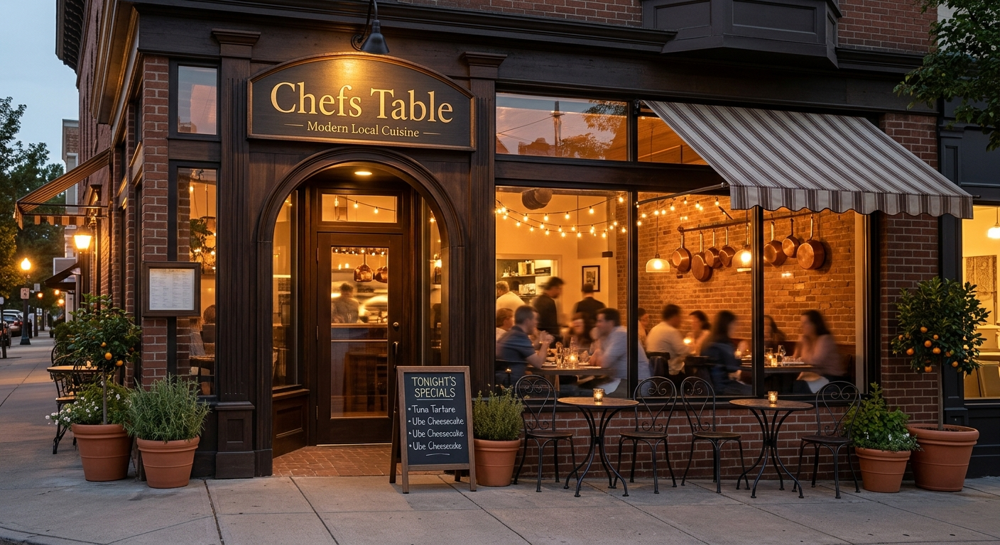

About Us
Learn more about our story and values!

Contact Us
Get in touch with us for inquiries or reservations!Phone: +1 (234) 567-890
Email: chefstableresto@gmail.com
We offer the best food in town!
Learn more about our story and values!
